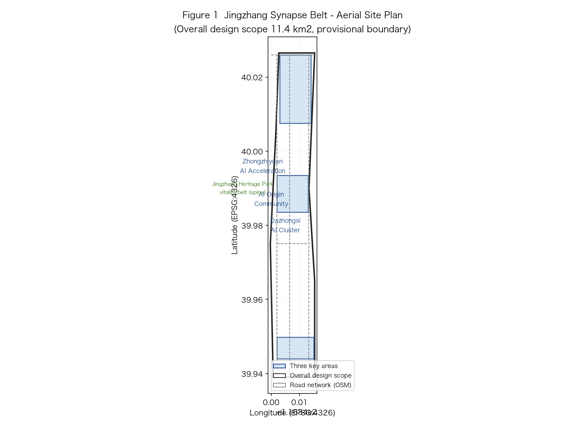
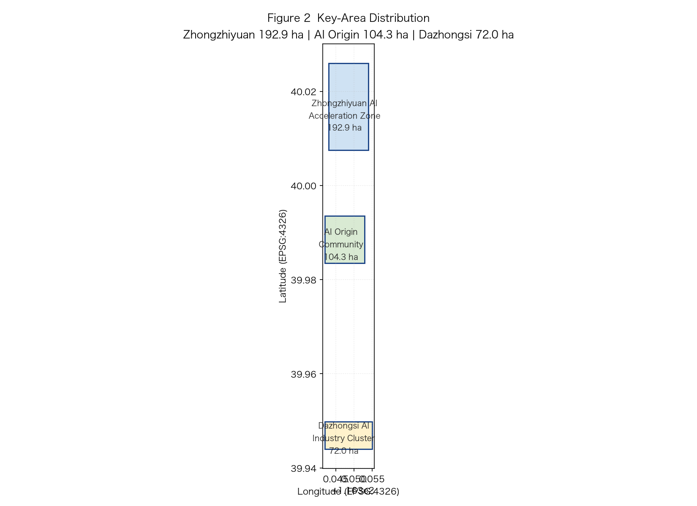
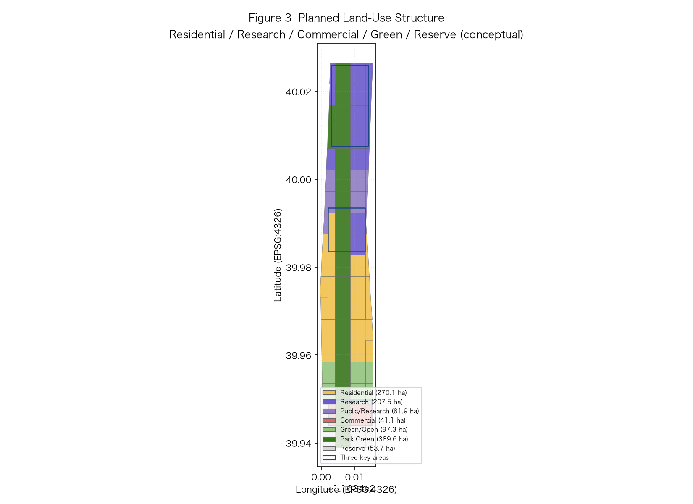
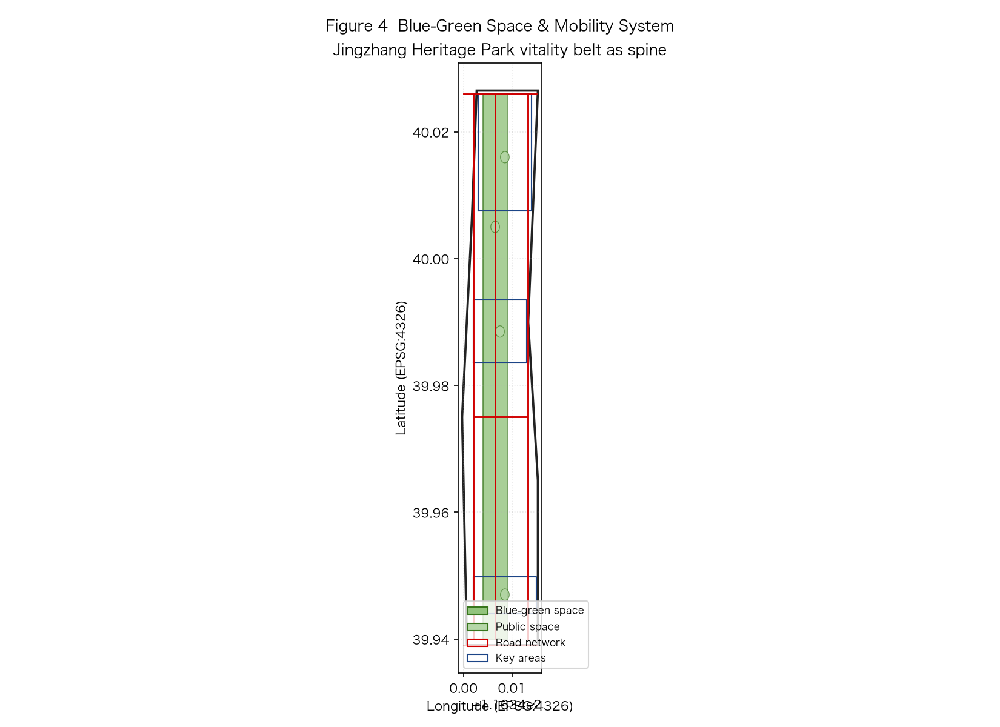

The Jingzhang Synapse Belt is located in Haidian District, Beijing. Overall research scope 43.6 km², overall design scope 11.4 km².
Overall research 43.6 km² / Overall design 11.4 km² / Key areas 368.4 ha, a three-level spatial-control system.
Three key areas: Zhongzhiyuan AI Acceleration Zone (192.1 ha), Beijing AI Origin Community (104.3 ha), Dazhongsi AI Industry Cluster (72.0 ha).


Land-use structure: research land 389.6 ha, commercial land 207.5 ha, green & open space 97.3 ha (conceptual).

AI-innovation skeleton built on the Jingzhang corridor, Metro Line 13 and urban arterials; slow-traffic network coverage ≥85%.
Blue-green space ratio 35.74%, forming an ecological network of "one belt, three cores, multi corridors".
40 current building footprints, total footprint about 53.7 ha, mainly retained and renewed.
Phased implementation: near-term (2026-2028) Zhongzhiyuan start zone, mid-term (2029-2031) AI Origin Community, far-term (2032-2035) Dazhongsi cluster.
12 AI scenario cards covering governance, industry and life; 4 AI landmark nodes.
Covers agent.1~agent.6 overall concept, spatial structure, function placement, scenario validation, operation communication, compliance disclosure.
self_check.json four gates (DETERMINISTIC_VALIDATION / SPATIAL_REVIEW / VISUAL_PACKAGING / PROFESSIONAL_EVIDENCE) all pass/blocking.
Data sources: brief/site-package taskbook, agent_taskbook.json, provisional_boundaries.geojson (provisional boundary).
This is a conceptual scheme; boundaries are provisional rough boundaries (provisional_rough), not statutory redlines; areas computed in EPSG:4548, to be recomputed after official boundaries are published.